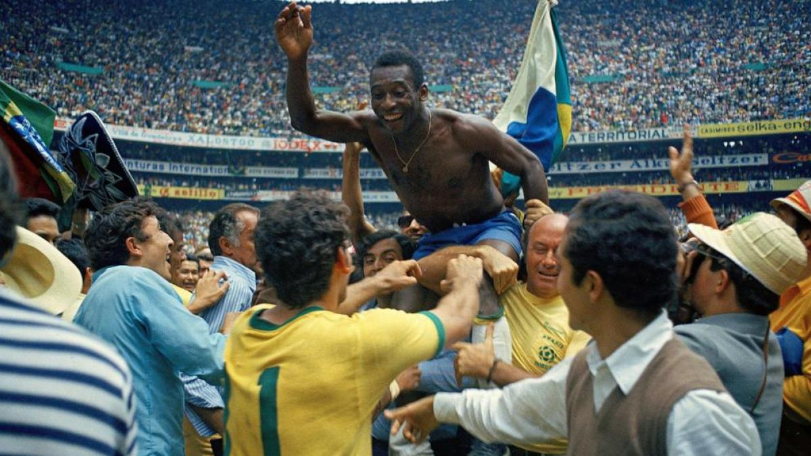
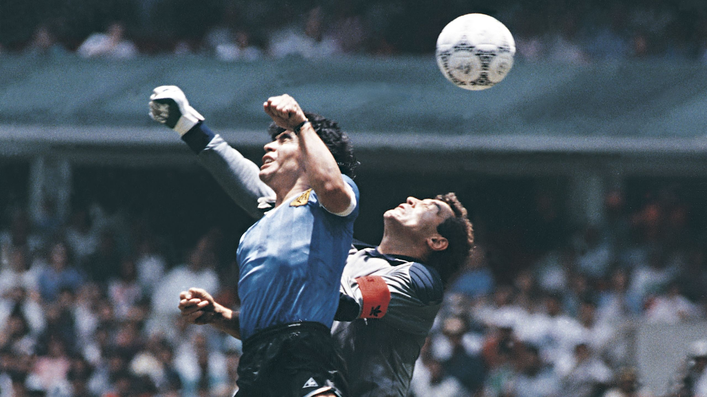
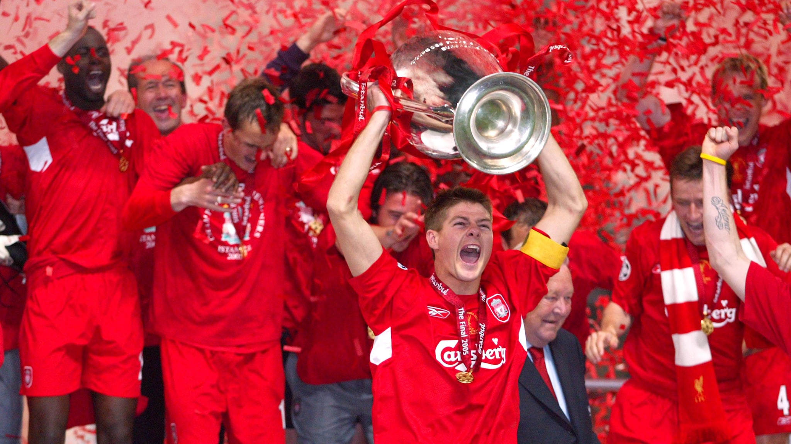

Diego Maradona: El Gol del Siglo

Era el 22 de junio de 1986, un día que quedaría grabado en la memoria de millones de aficionados al fútbol. En el Estadio Azteca de Ciudad de México, Argentina se enfrentaba a Inglaterra en un partido de cuartos de final de la Copa del Mundo. Maradona, con su magia, eludió a cinco jugadores rivales y anotó uno de los goles más memorables de la historia del fútbol.
El Dominio de Mexico 1970
La Copa del Mundo de 1970, celebrada en México, es recordada como una de las mejores ediciones del torneo. Brasil, liderado por Pelé, Jairzinho, Tostão y Rivelino, mostró un fútbol espectacular y ofensivo. En la final, se enfrentaron a Italia en el Estadio Azteca. Brasil ganó 4-1, y Pelé anotó un gol memorable, donde se elevó por encima de los defensores italianos para cabecear el balón. Este equipo brasileño es considerado uno de los mejores de la historia, y su estilo de juego, conocido como "fútbol arte", dejó una marca indeleble en el deporte . Con esta victoria, Brasil se convirtió en el primer país en ganar tres Copas del Mundo, lo que les permitió quedarse con el trofeo Jules Rimet de forma permanente. 
La mano de Dios
El mismo partido entre Argentina e Inglaterra en 1986 también es famoso por otro gol de Maradona, conocido como la "Mano de Dios". En el minuto 50, Maradona empujó el balón hacia la red con su mano, un acto que pasó desapercibido para el árbitro. Este gol generó controversia y se convirtió en un símbolo de la astucia y la picardía en el fútbol. Maradona, en su autobiografía, describió el gol como "un poco con la cabeza de Maradona y otro poco con la mano de Dios". Este momento encapsula la dualidad del fútbol: la belleza y la controversia que a menudo lo rodean. 
La Resurreción de Liverpool 2005
La final de la Liga de Campeones de la UEFA de 2005, disputada en Estambul, es recordada como una de las mayores remontadas en la historia del fútbol. El Liverpool se enfrentó al AC Milan y, al final del primer tiempo, estaba perdiendo 3-0. Sin embargo, en una segunda mitad mágica, el Liverpool logró empatar el partido en solo seis minutos, con goles de Steven Gerrard, Vladimir Smicer y Xabi Alonso. El partido se fue a penales, y el Liverpool ganó 3-2, completando una de las remontadas más épicas de la historia del fútbol. Este triunfo se convirtió en un símbolo de la determinación y el espíritu del equipo. 